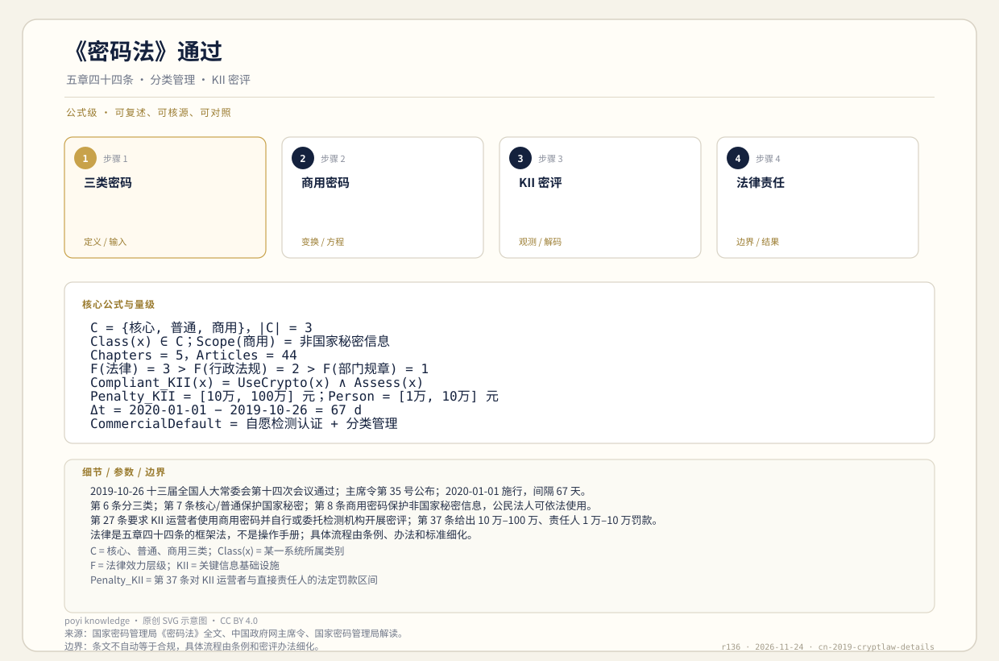

原理与机制
中国密码史：《密码法》通过（Cryptography Law Passed）。《密码法》是密码领域的第一部法律，2019 年 10 月 26 日由十三届全国人大常委会第十四次会议通过，主席令第 35 号公布，2020 年 1 月 1 日施行。全文五章四十四条，结构是总则、核心密码与普通密码、商用密码、法律责任、附则。第 6 条把密码分为核心、普通、商用三类；第 7 条把核心/普通绑定国家秘密，核心最高保护绝密级、普通最高保护机密级；第 8 条把商用密码定义为保护不属于国家秘密的信息，公民、法人和其他组织可以依法使用。第 27 条专门规定 KII 运营者应使用商用密码保护，自行或者委托商用密码检测机构开展密评，并与网络安全等级测评、KII 安全检测评估衔接，避免重复评估。法律责任不是抽象口号：第 37 条对 KII 运营者未按要求使用商用密码或未开展密评，先责令改正、给予警告；拒不改正或导致危害网络安全等后果的，处 10 万–100 万元罚款，对直接负责的主管人员处 1 万–10 万元罚款。把分类、义务、罚款写成集合与区间，就能把“法律条文”转成可核对的合规清单。

为什么重要
密码法的意义不只是“有法可依”，而是把商用密码从行政法规层面的专控管理，提升为法律层面的分类治理。它明确了三类密码的不同保护对象，给商用密码留下“保护非国家秘密信息”的广阔空间；同时把标准化、检测认证、市场准入、KII 评估和法律责任写进法律，使后续条例、办法和标准有上位法依据。对商用密码产业，这意味着两件事同时发生：一般商用密码活动可以依法使用、自愿检测认证，市场空间扩大；KII 等关键场景则必须使用商用密码并开展密评，安全义务加重。理解这种“分类 + 分场景”的结构，才能理解为什么密码法既促进发展，又强化关键领域保护。
应用与实例
使用密码法时，先做分类判断：系统保护的是国家秘密还是非国家秘密？如果是国家秘密，进入核心/普通密码章节；如果是非国家秘密，进入商用密码章节。然后判断场景：是否属于 KII？如果是，第 27 条要求使用商用密码并开展密评；如果不是，一般商用密码活动以依法使用和自愿检测认证为主。合规清单可以写成：Class(x) 先分类；UseCrypto(x) 判断是否按要求使用商用密码；Assess(x) 判断是否开展密评；Penalty_KII 只在 KII 违反第 27 条时适用。这个顺序避免把“所有商用密码系统都要强制密评”或“所有商用密码都要许可”混为一谈。
边界与攻击面
密码法的边界是“框架法”：它规定原则、分类、义务和责任，不规定每一步操作流程。密评具体怎么做，要看 2023 年《商用密码应用安全性评估管理办法》；检测认证怎么做，要看条例和认证目录；KII 认定范围，要看《关键信息基础设施安全保护条例》等配套规则。另一个边界是自愿与强制并存：一般商用密码产品和服务以自愿检测认证为主，涉及国家安全、国计民生、社会公共利益的产品和服务才强制检测认证；KII 才强制密评。把“商用密码”整体说成“全部强制许可”或“全部自愿”都不准确。
历史与背景
2019 年 10 月 26 日，十三届全国人大常委会第十四次会议表决通过密码法；主席令第 35 号同日公布；2020 年 1 月 1 日施行。国家密码管理局在 2019 年 12 月 30 日和 2020 年 1 月 3 日发布背景文章与新闻发言人解读，说明三类密码、商用密码管理和 KII 密评的制度安排。密码法之前，商用密码领域主要依据 1999 年《商用密码管理条例》；密码法之后，条例于 2023 年修订，密评办法于 2023 年施行。这个“法律—行政法规—部门规章—标准”的层级，正是公式里 F(law)=3、F(regulation)=2、F(rule)=1 的现实对应。
逐步示例与核验
事件时间线模型
背景 → 过程 → 结果 → 争议。背景写此前技术/制度；过程写可核参与者与时间；结果写后续标准、机器、课程或政策；争议写二手叙述与一手材料的差距。
参考出处
- Wikipedia search entry for 《密码法》通过. https://zh.wikipedia.org/w/index.php?search=%E3%80%8A%E5%AF%86%E7%A0%81%E6%B3%95%E3%80%8B%E9%80%9A%E8%BF%87
- 《密码简史：穿越远古 展望未来》（杨义先、钮心忻，电子工业出版社，2020，ISBN 9787121398711）. https://book.cppinfo.cn/Encyclopedias/home/index?id=3730464